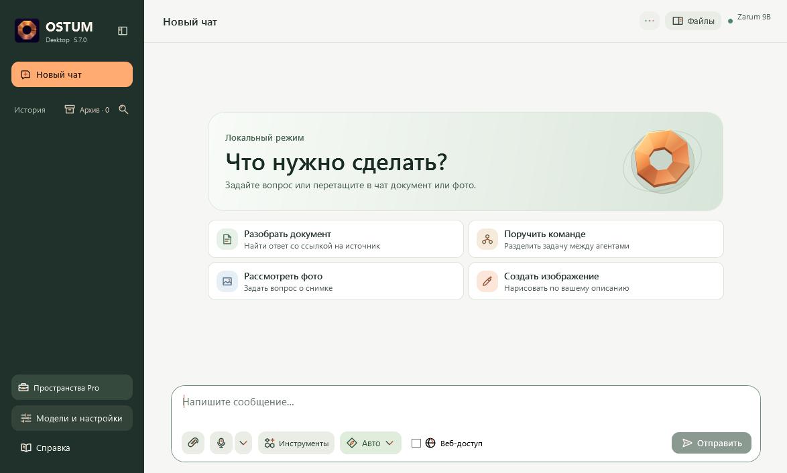

OSTUM Desktop 5.7.0
Local AI for Windows
Ask a question about a document, turn a recording into meeting notes or reconcile two price lists. Zarum 9B runs on your PC.
Windows 10 and 11 x64 · Version 5.7.0 installer is 108.3 MiB
Offline after setup
A full first installation downloads 13.38 GB of models. For Zarum 9B, start with 16 GB RAM and at least 20 GB free on an SSD.
Try the free chat
Chat works without an account. Attach a photo or PDF and ask about its contents. The Windows interface and built-in help are in Russian.
How Pro access works
The Word and Excel workspace unlocks after a one-time subscription check for the developer’s Telegram channel. Access is permanent for that installation and Windows user.